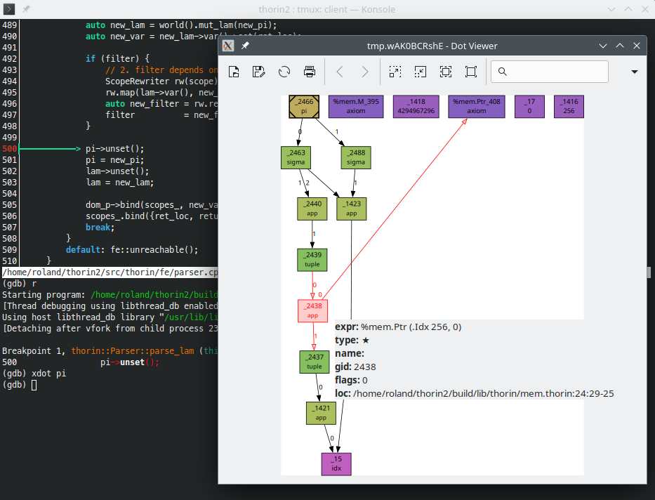

|
MimIR 0.1
MimIR is my Intermediate Representation
|
|
MimIR 0.1
MimIR is my Intermediate Representation
|
This document comprises some information that is related to coding but not directly to the API.
Use the following coding conventions:
CamelCase.enum or via static const in Camel_Snake_Case.SNAKE_IN_ALL_CAPS.snake_case.private_or_protected_member_variable_.bool should be prefixed with is_.std::optional or a pointer that may be nullptr should be prefixed with isa_.public_member_variable.struct for plain old data.class for everything else.// C++-style comments over /* C-style comments */.#pragma once as guard for headers.publicprotectedprivate/// three slashes for Doxygen.For all the other minute details like indentation width etc. use clang-format and the provided .clang-format file in the root of the repository. In order to run clang-format automatically on all changed files, switch to the provided pre-commit hook:
Note that you can disable clang-format for a piece of code. In addition, you might want to check out plugins like the Vim integration.
Here is an example for a header that follows above conventions:
Note that you can simply invoke
from within GDB:
In particular, note the different output levels of mim::Def::dump. What is more, you can adjust the output behavior directly from within GDB by modifying mim::World::flags or mim::World::log:
Another useful feature is to retrieve a Def* from a mim::Def::gid via mim::World::gid2def:
scripts/xdot.gdb provides custom GDB commands to create a DOT graph and display it through xdot. Just source scripts/xdot.gdb in your ~/.gdbinit:
Here is the xdot GDB command in action: 
Often, you will want to inspect a certain mim::Def at a particular point within the program. You can use conditional breakpoints for this. For example, the following GDB command will break, if the mim::Def::gid of variable def is 42 in source code location foo.cpp:23:
For several things like errors in the Mim frontend, MimIR relies on C++ exceptions for error handling. Do this to encounter them within GDB:
If you encounter memory related problems, you might want to run the program with Valgrind's GDB server. Launch the program like this
and follow the instructions.
As a utility to make debugging MimIR itself less painful with certain debuggers, the mim.natvis file can be loaded for getting more expressive value inspection. In VS Code you can do so by adding the following to the launch.json configurations. When launching from VS Code via CMake, put it in settings.json's "cmake.debugConfig"::
Run the lit testsuite with:
You can manually invoke the lit tests like this and maybe filter for a specific test:
If your build directory, is in fact build you can use the probe.sh script:
Run the GoogleTest unit tests within the build folder with:
In addition, you can enable Valgrind with:
During debugging you probably only want to run a specifig test case. You can filter the test cases like this:
This command lists all available tests:
In addition, you may find it helpful to turn assertion failures into debugger breakpoints:
This Vim plugin provides syntax highlighting for Mim files.
Check out the demo plugin for a minimalistic plugin. You can create a new in-tree plugin foobar based upon the demo plugin like this:
After installing MimIR, third-party plugins just need to find the mim package to use your plugin foo:
Use
to configure the project.
Registers a new MimIR plugin.
The <plugin-name> is the name of the plugin. This means, there should be relative to the plugin's CMakeLists.txt a file <plugin-name>.mim containing annexes. The command will create two targets:
mim_internal_<plugin-name>
This is an internal target to bootstrap the plugin. It will generate:
<plugin-name>/autogen.h for the C++ interface in order to identify annexes,<plugin-name>.md for the documentation, and<plugin-name>.d for the plugin's dependencies. add_custom_command's DEPFILE argument.mim_<plugin-name>
This is the actual MODULE library.
SOURCES
These are the <source> files used to build the loadable plugin containing normalizers, passes, and backends. One of the source files must export the mim_get_plugin function.
PRIVATE
Furthermore, you can specify additional <private-item> build dependencies.
INSTALL
Specify, if the plugin description, plugin and headers shall be installed with make install. To export the targets, the export name mim-targets has to be exported accordingly (see install(EXPORT ..))
You can specify additional properties in the plugin's CMakeLists.txt. For example, the following snippet adds additional include paths for the MODULE mim_<plugin-name> target: